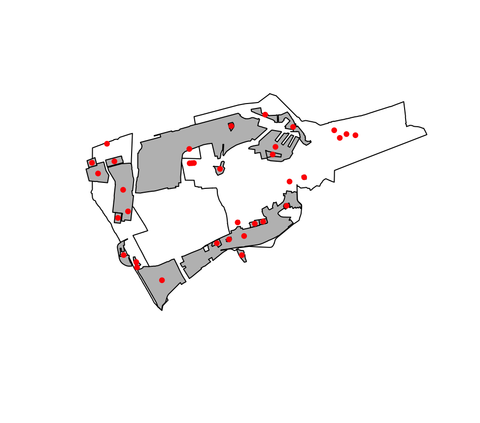
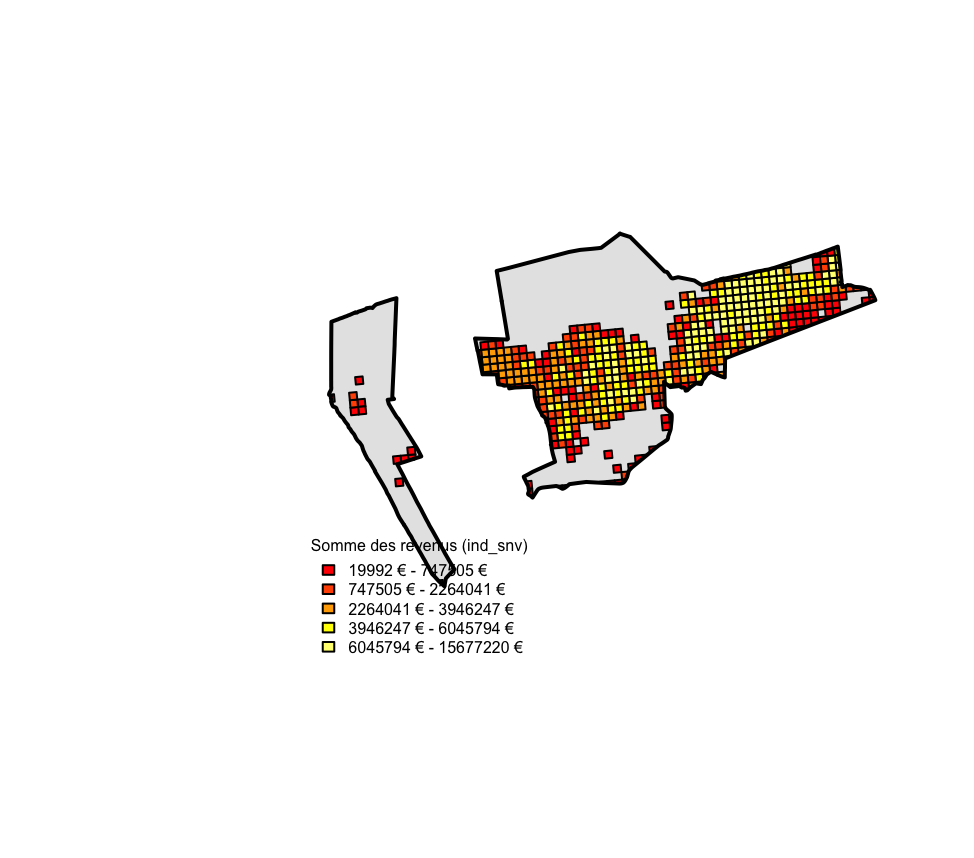

Cette étude repose principalement sur 3 jeux de données géographiques et statistiques permettant d’analyser les relations entre risques industriels et inégalités socio-démographiques à Dunkerque.
Les données vectorielles utilisées comprennent :
Ces données permettent de représenter spatialement les éléments étudiés (polygones pour les communes, points pour les industries).
Les limites communales ont été utilisées afin de délimiter le territoire d’étude et d’extraire spécifiquement la commune de Dunkerque. Ces données cadastrales proviennent de la plateforme Etalab, issues de la Direction générale des finances publiques.
Les données étant déjà fournies dans le système de référence Lambert-93 (EPSG:2154) et elles ont simplement été utilisées comme couche de référence spatiale pour la délimitation de la commune de Dunkerque, et le filtrage des autres jeux de données.
Caractéristiques :
Source : Direction générale des finances publiques (Etalab)
Format : Shapefile (.shp)
Type : polygone
Projection: Lambert-93
Les sites industriels proviennent d’OpenStreetMap, extraites via l’outil Overpass Turbo. Les objets industriels ont d’abord été récupérés sous forme polygonale, puis convertis en points pour faciliter les géo-traitements.
Plusieurs traitements ont été nécessaires pour exploiter ces données ; d’abord l’extraction des centroïdes des polygones industriels afin de représenter chaque site par un point ; puis la reprojection en Lambert-93 (EPSG:2154) pour être compatible avec les autres données.
Caractéristiques :
Source : OpenStreetMap (Overpass Turbo)
Format : GeoJSON
Type : polygones (transformé en points)
Projection: WGS84 (transformé Lambert-93)

Localisation des zones industrielles et des industries à Dunkerqueplot(st_geometry(dunkerque))
plot(st_geometry(industries), add = TRUE, col = "grey")
plot(st_geometry(industries_points), add = TRUE, col = "red", pch = 20)Les données socio-économiques de revenus proviennent de l’INSEE, concernent le niveau de vie médian des populations à l’échelle des quartiers et sont initialement fournies sous forme de tableau CSV. Il s’agit de données attributaires qui étaient fournies sous forme de carroyage déjà géoréférencé.
Caractéristiques :
Source : INSEE
Format : CSV
Type : données attributaires
Variable étudiée : ind_snv (niveau de vie)

Répartition des niveau de vie à Dunkerquebrks <- quantile(revenus_dk$ind_snv,
probs = seq(0, 1, length.out = 6),
na.rm = TRUE)
cols <- heat.colors(length(brks) - 1)
classes <- cut(revenus_dk$ind_snv,
breaks = brks,
include.lowest = TRUE)
plot(st_geometry(dunkerque),
col = "grey90",
border = "black")
plot(st_geometry(revenus_dk),
col = cols[classes],
pch = 20,
cex = 0.6,
add = TRUE)
plot(st_geometry(dunkerque),
add = TRUE,
border = "black",
lwd = 2)
legend("bottomleft",
legend = paste0(round(brks[-length(brks)]), " € - ", round(brks[-1]), " €"),
fill = cols,
title = "Somme des revenus (ind_snv)",
bty = "n",
cex = 0.5)